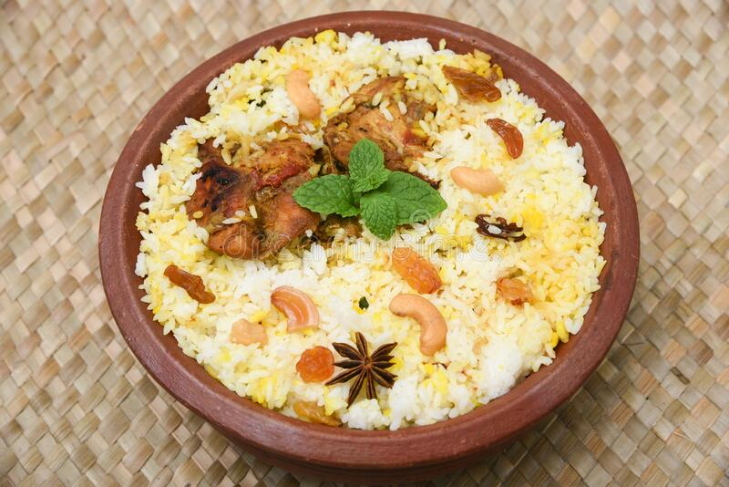

Chicken Biryani Recipe

About Biryani
Biryani is a mixed rice dish originating among the Muslims of the Indian subcontinent. It is made with Indian spices, rice, and usually some type of meat (chicken, beef, goat, lamb, prawn, fish) or in some cases without any meat, and sometimes, in addition, eggs and potatoes.
Biryani is one of the most popular dishes in South Asia, as well as among the diaspora from the region. Similar dishes are also prepared in other parts of the world such as in Iraq, Thailand, and Malaysia.Biryani is the single most-ordered dish on Indian online food ordering and delivery services.
Ingredients
- Chicken - 1 kg
- Onion - 4 large sliced
- Green Chillies - 6
- Coconut Oil - 1 cup
- Bay Leaf - 1
- Cinnamon / Pattai - 1 stick
- Cardamom / Yelakai - 5
- Cloves / Krambu - 4
- Star Anise - 1
- Fennel Seeds / Sombu / Saunf - 1 tsp
- Tomato - 2 chopped finely
- Ginger Garlic Paste - 3 tblsp
- Yogurt / Curd - 1 cup
- Salt to taste
- Turmeric Powder - 1 tsp
- Chilli Powder - 2 tblsp
- Coriander Powder - 2 tblsp
- Garam Masala Powder - 1 tblsp
- Cumin Powder - 2 tsp
- Curry Leaves a small handful
- Coriander Leaves - ½ cup
- Mint Leaves - ½ cup
Steps
- Wash and soak rice for 30 mins.
- heat oil in a biryani pot. Add 3 sliced onions and cook till golden brown. Remove it to a bowl.
- In the same oil. Add whole spices and let them sizzle.
- Add in 1 sliced onion and curry leaves. Cook till golden.
- Add in ginger garlic paste and saute for a min.
- Add in tomatoes and cook till mushy.
- Add chicken, chillies and spice powders and mix well.
- Add in yogurt and salt and mix well.
- Cover and cook till chicken is done. Now remove half of the masala to a bowl.
- Meanwhile when chicken is cooking, cook rice.
- Take water in a sauce pan, add salt, whole spices.
- Once water boils, add rice and cook for 8 to 10 mins till rice is done.
- Drain and set aside.
- in the masala. layer half of the rice, top with coriander leaves, mint leaves, fried onions.
- Layer remaining masala. Then rice, coriander leaves, mint leaves and fried onions.
- Cover the pot and cook on very low heat for 30 mins. Now leave aside for 15 mins.
- fluff up the rice and serve hot.